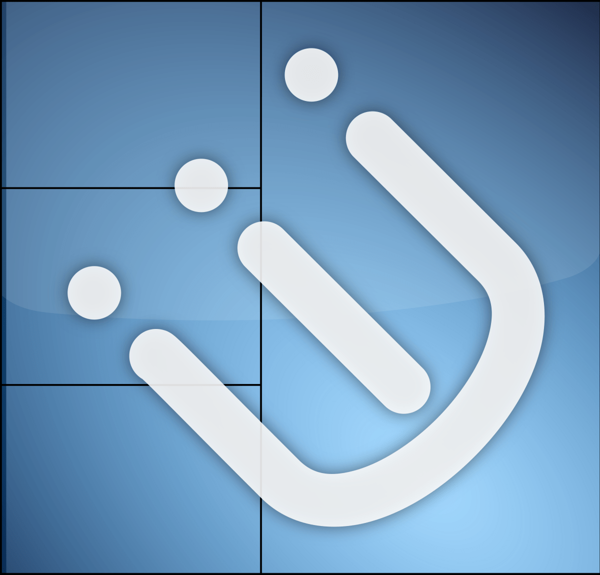

Le Ricing sur Linux

Le terme "Ricing" dans le contexte de Linux se réfère à la personnalisation esthétique poussée du bureau et de l'interface utilisateur. Les utilisateurs de Linux aiment personnaliser leur environnement pour le rendre unique et esthétiquement plaisant.
Gestionnaires de Fenêtres et Compositeurs
Dans le monde de Linux, les gestionnaires de fenêtres (Window Managers) et les compositeurs (Compositors) jouent un rôle essentiel dans la gestion et l'affichage des fenêtres sur le bureau.
Les gestionnaires de fenêtres contrôlent la disposition et l'apparence des fenêtres. Certains sont minimalistes, tandis que d'autres offrent des fonctionnalités plus avancées.
Les compositeurs gèrent les effets visuels tels que les ombres, la transparence et les animations. Ils améliorent l'expérience utilisateur en ajoutant des effets graphiques.
Gestionnaires de Fenêtres (Window Managers)
Les gestionnaires de fenêtres contrôlent l'apparence et le positionnement des fenêtres sur le bureau. Certains sont minimalistes et axés sur la performance, tandis que d'autres offrent des fonctionnalités avancées et une grande personnalisation.
Exemple : i3 Window Manager

i3 est un gestionnaire de fenêtres tiling (mosaïque) qui organise automatiquement les fenêtres en tuiles sans chevauchement. Il est basé sur un fonctionnement entièrement via le clavier, ce qui le rend efficace pour les utilisateurs adeptes du clavier.
Compositeurs (Compositors)
Les compositeurs gèrent les effets visuels tels que les ombres, la transparence et les animations. Ils améliorent l'expérience utilisateur en ajoutant des effets graphiques.
Exemple : Picom
Picom est un compositeur léger pour X Window System. Il ajoute des effets de transparence, des ombres et d'autres améliorations visuelles. Les utilisateurs l'apprécient pour sa simplicité et son impact limité sur les performances.Exemples de Ricing
Voici quelques exemples impressionnants de ricing sur des bureaux Linux :
Exemple 1

Description de l'exemple 1...
Exemple 2

Description de l'exemple 2...